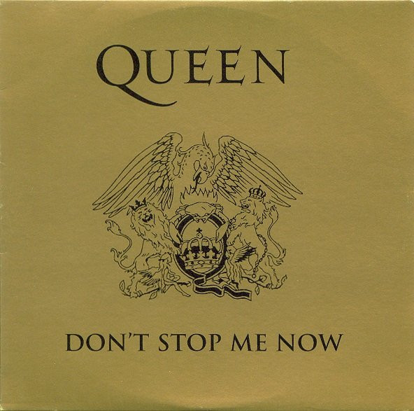

Início
Biografia
Músicas
Álbuns
Redes Sociais
QUEEN
As Músicas Mais Famosas
Bohemian Rhapsody
OUVIR
We Will Rock You
OUVIR
Another One Bites the Dust
OUVIR

Don't Stop Me Now
OUVIR
Killer Queen
OUVIR
We Are The Champions
OUVIR